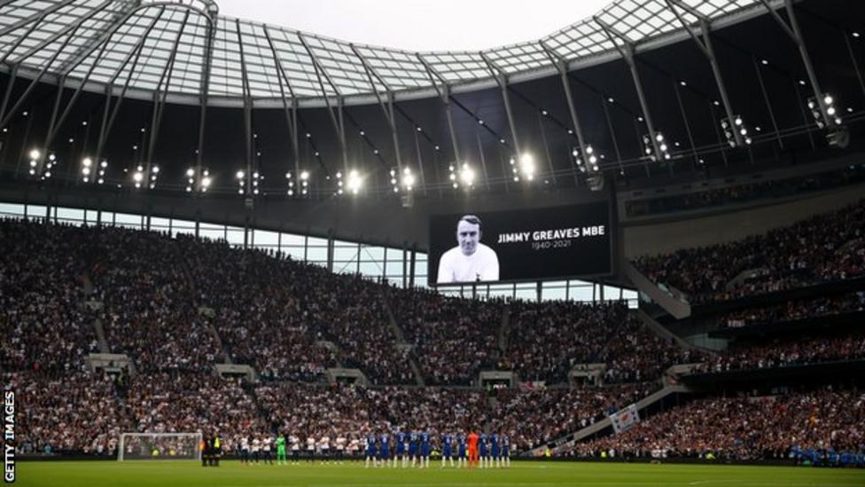

Jimmy Greaves: Spurs, Chelsea and West Ham lead tributes to former striker
Tottenham and Chelsea led the tributes for their former player Jimmy Greaves, who has died aged 81.
Martin Chivers, Steve Perryman, Micky Hazard, Paul Allen, Ossie Ardiles, Gary Mabbutt, Graham Roberts, Glenn Hoddle, Ledley King and Michael Dawson were all present.
During the applause, some Spurs fans held flags and banners to remember the club's record goalscorer.
Former Spurs and England striker Gary Lineker told BBC Sport: "Jimmy had a fabulous contribution to football, an incredible goalscoring record.
"He was devilishly funny as well with his wit and personality, so charismatic. But on the field of play people will remember him most. Those of us that are old enough to have witnessed his magnificence at times, he could score all sorts of goals and was a beautifully graceful footballer and a wonderful finisher.
"For me, Jimmy was one of my heroes as well. Growing up watching him play we didn't have the amount of games on television that we now do but I managed to see him play a few times.
"I also was fortunate enough to meet him on numerous occasions and he was always affable and fun and hugely knowledgeable. He was a great personality, a wonderful footballer and a man with huge charisma and fun and he will be much missed."
On an emotional day across football grounds, West Ham, another of Greaves' former clubs, also held a minute's applause before their Premier League match against Manchester United, as did Brighton and Leicester City.
Players from all six teams wore black armbands for Greaves, who holds the record for most goals in the English top flight with 357.
Spurs captain Harry Kane, who is second behind Greaves on the club's scoring list, told Sky Sports before facing Chelsea: "First and foremost our condolences to Jimmy's family and close friends. It's a sad one but hopefully a day we can celebrate.
"He played for Tottenham and Chelsea and hopefully we put in a great performance in his honour.
"Jimmy was an incredible player and goalscorer and a legend for club and country.
"It's frightening really how good a player he was. For someone like me to look at his numbers and one day go on to break those numbers would be incredible. I got to meet him back in 2017 and it's just a celebration of him today."
Greaves began his career with Chelsea and his 41 goals in 1960-61 remains a record in a season for the Blues.
Greaves won two FA Cups and one Cup Winners' Cup and scored 266 goals in 379 appearances for Spurs, where he is considered a club legend.
BBC Sports, 'Jimmy Greaves: Spurs, Chelsea and West Ham lead tributes to former striker', 2021. [Online]. Available: https://www.bbc.com/sport/football/58616727. [Accessed: 19 Sep 2021].